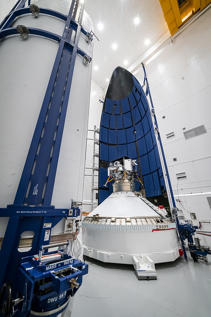

Assembly Overview
This photograph shows the payload being assembled atop the Spacecraft Transport Vehicle (STV), the white assembly sitting on the ground that holds the payload as it is built. Although I was not the main designer on the pictured STV, I created a very similar design for a different use case. The assembly was designed to maintain structural integrity while incorporating design details to assist Launch Operations in decreasing installation span time.
Image source: ULA Flickr Photo Album